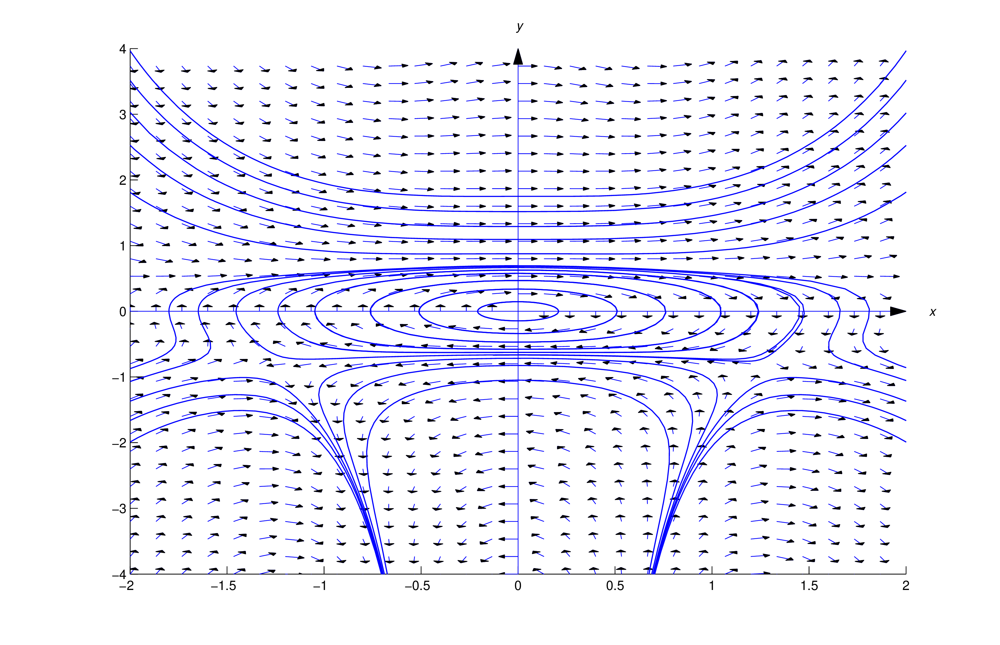
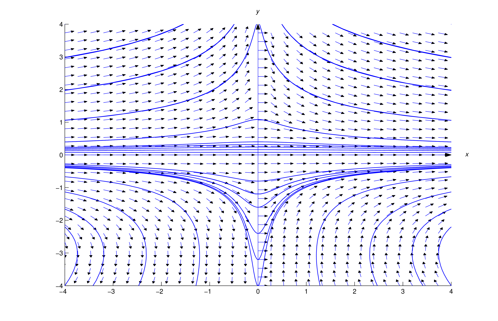
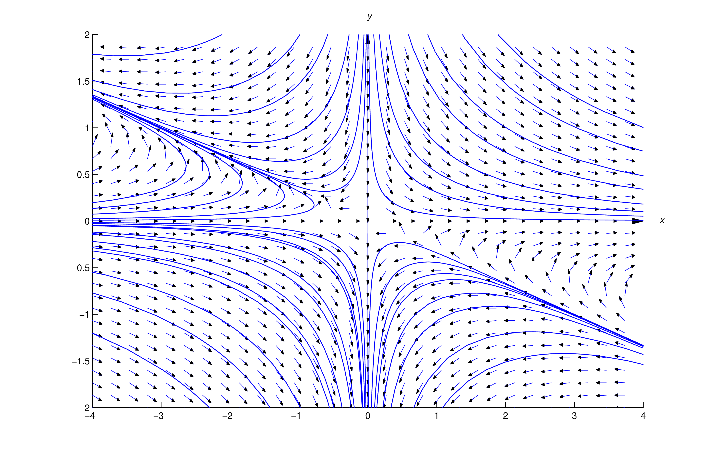
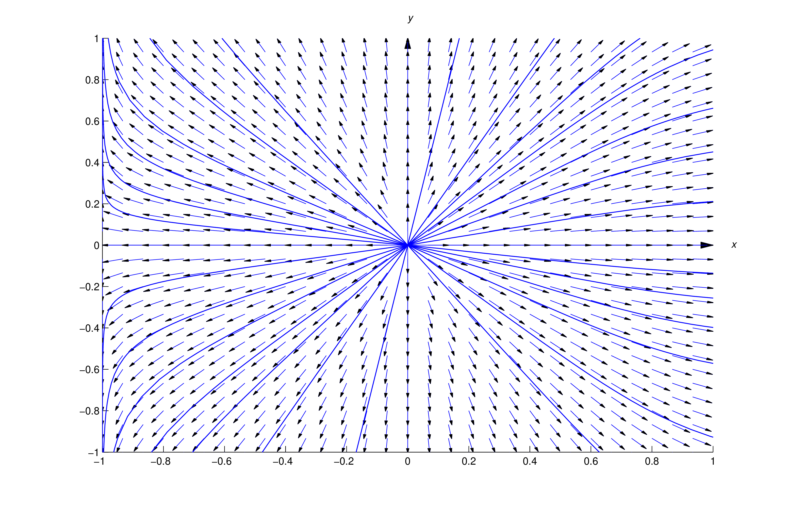

In Section 2.5 we saw that if \(M\), \(N\), \(M_y\) and \(N_x\) are
continuous and \(M_y=N_x\) on an open rectangle \(R\) then \begin
{equation} \label {eq:2.6.1} M(x,y)\,dx+N(x,y)\,dy=0 \end {equation}
is exact on \(R\). Sometimes an equation that isn’t exact can be made
exact by multiplying it by an appropriate function. For example, \begin
{equation} \label {eq:2.6.2} (3x+2y^2)\,dx+2xy\,dy=0 \end {equation}
is not exact, since \(M_y(x,y)=4y\ne N_x(x,y)=2y\) in (2.6.2). However, multiplying (2.6.2) by \(x\) yields \begin {equation} \label {eq:2.6.3}
(3x^2+2xy^2)\,dx+2x^2y\,dy=0\end {equation}
which is exact, since \(M_y(x,y)=N_x(x,y)=4xy\) in (2.6.3). Solving (2.6.3) by the procedure given in Section 2.5 yields the implicit solution
\[ x^3+x^2y^2=c\]
A function \(\mu =\mu (x,y)\) is an
integrating factor
for (2.6.1) if \begin {equation} \label {eq:2.6.4} \mu (x,y)M (x,y)\,dx+\mu (x,y)N
(x,y)\,dy=0 \end {equation}
is exact. If we know an integrating factor \(\mu \) for (2.6.1), we can solve the exact equation (2.6.4) by the method of Section 2.5. It would be nice if we could say that
(2.6.1) and (2.6.4) always have the same solutions, but this isn’t so. For example, a
solution \(y=y(x)\) of (2.6.4) such that \(\mu (x,y(x))=0\) on some interval \(a<x<b\) could fail
to be a solution of (2.6.1) (Exercise
1
), while (2.6.1) may have a solution \(y=y(x)\) such that \(\mu (x,y(x)) \) isn’t even
defined (Exercise
2
). Similar comments apply if \(y\) is the independent variable and \(x\)
is the dependent variable in (2.6.1) and (2.6.4). However, if \(\mu (x,y)\) is defined and nonzero for all \((x,y)\), (2.6.1) and (2.6.4) are equivalent; that is, they have the same solutions.
Finding Integrating Factors
By applying Theorem
2.5.2
(with \(M\) and \(N\) replaced by \(\mu M\) and \(\mu N\)), we see that (2.6.4) is exact on an open rectangle \(R\) if \(\mu M\), \(\mu N\), \((\mu
M)_y\), and \((\mu N)_x\) are continuous and \[ {\partial \over \partial
y}(\mu M)={\partial \over \partial x} (\mu N) \mbox {\quad or,
equivalently, \quad } \mu _yM+\mu M_y=\mu _xN+\mu N_x \] on \(R\). It’s
better to rewrite the last equation as \begin {equation} \label {eq:2.6.5}
\mu (M_y-N_x)=\mu _xN-\mu _yM\end {equation}
which reduces to the known result for exact equations; that is, if
\(M_y=N_x\) then (2.6.5) holds with \(\mu =1\), so (2.6.1) is exact.
You may think (2.6.5) is of little value, since it involves
partial
derivatives of the unknown integrating factor \(\mu \), and we haven’t
studied methods for solving such equations. However, we’ll now show that (2.6.5) is useful if we restrict our search to integrating factors that are
products of a function of \(x\) and a function of \(y\); that is, \(\mu
(x,y)=P(x)Q(y)\). We’re not saying that
every
equation \(M\,dx+N\,dy=0\) has an integrating factor of this form; rather,
we’re saying that
some
equations have such integrating factors.We’llnow develop a way to
determine whether a given equation has such an integrating factor, and a
method for finding the integrating factor in this case.
If \(\mu (x,y)=P(x)Q(y)\), then \(\mu _x(x,y)=P'(x)Q(y)\) and \(\mu
_y(x,y)=P(x)Q'(y)\), so (2.6.5) becomes \begin {equation} \label {eq:2.6.6}
P(x)Q(y)(M_y-N_x)=P'(x)Q(y)N-P(x)Q'(y)M\end {equation}
or, after dividing through by \(P(x)Q(y)\), \begin {equation} \label
{eq:2.6.7} M_y-N_x={P'(x)\over P(x)}N-{Q'(y)\over Q(y)}M\end {equation}
Now let \[ p(x)={P'(x)\over P(x)} \quad \mbox{ and } \quad
q(y)={Q'(y)\over Q(y)}\] so (2.6.7) becomes \begin {equation} \label {eq:2.6.8} M_y-N_x=p(x)N-q(y)M\end
{equation}
We obtained (2.6.8) by
assuming
that \(M\,dx+N\,dy=0\) has an integrating factor \(\mu (x,y)=P(x)Q(y)\).
However, we can now view (2.6.7) differently: If there are functions \(p=p(x)\) and \(q=q(y)\) that
satisfy (2.6.8) and we define \begin {equation} \label {eq:2.6.9} P(x)=\pm e^{\int
p(x)\,dx}\quad \mbox{ and } \quad Q(y)=\pm e^{\int q(y)\,dy}\end
{equation}
then reversing the steps that led from (2.6.6) to (2.6.8) shows that \(\mu (x,y)=P(x)Q(y)\) is an integrating factor for
\(M\,dx+N\,dy=0\). In using this result, we take the constants of
integration in (2.6.9) to be zero and choose the signs conveniently so the integrating factor
has the simplest form.
There’s no simple general method for ascertaining whether functions
\(p=p(x)\) and \(q=q(y)\) satisfying (2.6.8) exist. However, the next theorem gives simple sufficient conditions for
the given equation to have an integrating factor that depends on only one
of the independent variables \(x\) and \(y\), and for finding an
integrating factor in this case.
Theorem 2.6.1
Let \(M,\) \(N,\) \(M_y,\) and \(N_x\) be continuous on an open
rectangle \(R\). Then:
If \((M_y-N_x)/N\) is independent of \(y\) on \(R\) and we define \[
p(x)={M_y-N_x\over N} \] then \begin {equation} \label {eq:2.6.10}
\mu (x)=\pm e^{\int p(x)\,dx} \end {equation}
is an integrating factor for \begin {equation} \label {eq:2.6.11}
M(x,y)\,dx+N(x,y)\,dy=0 \end {equation}
on \(R\).
If \((N_x-M_y)/M\) is independent of \(x\) on \(R\) and we define \[
q(y)={N_x-M_y\over M}\] then \begin {equation} \label {eq:2.6.12}
\mu (y)=\pm e^{\int q(y)\,dy} \end {equation}
is an integrating factor for (2.6.11) on \(R\).
Proof
(a) If \((M_y-N_x)/N\) is independent of \(y\), then (2.6.8) holds with \(p=(M_y-N_x)/N\) and \(q\equiv 0\). Therefore \[ P(x)=\pm
e^{\int p(x)\,dx}\quad \mbox{ and} \quad Q(y)=\pm e^{\int q(y)\,dy}=\pm
e^0=\pm 1\] so (2.6.10) is an integrating factor for (2.6.11) on \(R\).
(b) If \((N_x-M_y)/M\) is independent of \(x\) then eqrefeq:2.6.8 holds
with \(p\equiv 0\) and \(q=(N_x-M_y)/M\), and a similar argument shows
that (2.6.12) is an integrating factor for (2.6.11) on \(R\). __
The next two examples show how to apply Theorem 2.6.1.
Find an integrating factor for the equation \begin {equation} \label
{eq:2.6.13} (2xy^3-2x^3y^3-4xy^2+2x)\,dx+(3x^2y^2+4y)\,dy=0 \end
{equation} and solve the equation.
Solution
In (2.6.13)
\[ M=2xy^3-2x^3y^3-4xy^2+2x,\ N=3x^2y^2+4y\] and \[
M_y-N_x=(6xy^2-6x^3y^2-8xy)-6xy^2=-6x^3y^2-8xy\] so (2.6.13)
isn’t exact. However, \[ {M_y-N_x\over N}=-{6x^3y^2+8xy\over
3x^2y^2+4y}=-2x \] is independent of \(y\), so Theorem 2.6.1(a)
applies with \(p(x)=-2x\). Since \[ \int p (x)\,dx=-\int 2x\,dx=-x^2\]
\(\mu (x)=e^{-x^2}\) is an integrating factor. Multiplying (2.6.13)
by \(\mu \) yields the exact equation \begin {equation} \label
{eq:2.6.14} e^{-x^2}(2xy^3-2x^3y^3-4xy^2+2x)\,dx+
e^{-x^2}(3x^2y^2+4y)\,dy=0\end {equation}
To solve this equation, we must find a function \(F\) such that \begin
{equation} \label {eq:2.6.15} F_x(x,y)=e^{-x^2}(2xy^3-2x^3y^3-4xy^2+2x)
\end {equation}
and \begin {equation} \label {eq:2.6.16} F_y(x,y)=e^{-x^2}(3x^2y^2+4y)\end
{equation}
Integrating (2.6.16)
with respect to \(y\) yields \begin {equation} \label {eq:2.6.17}
F(x,y)=e^{-x^2}(x^2y^3+2y^2)+\psi (x)\end {equation}
Differentiating this with respect to \(x\) yields \[
F_x(x,y)=e^{-x^2}(2xy^3-2x^3y^3-4xy^2)+\psi '(x)\] Comparing this with (2.6.15)
shows that \(\psi '(x)= 2xe^{-x^2}\); therefore, we can let \(\psi
(x)=-e^{-x^2}\) in (2.6.17)
and conclude that \[ e^{-x^2}\left (y^2(x^2y+2)-1\right )=c \] is an
implicit solution of (2.6.14).
It is also an implicit solution of (2.6.13).
Figure
2.6.1
shows a direction field and some integal curves for (2.6.13)

Figure 2.6.1
A direction field and
integral curves
for \((2xy^3-2x^3y^3-4xy^2+2x)\,dx+(3x^2y^2+4y)\,dy=0\)
Find an integrating factor for \begin {equation} \label {eq:2.6.18}
2xy^3\,dx+(3x^2y^2+x^2y^3+1)\,dy=0 \end {equation}
and solve the equation.
Solution
In (2.6.18), \[ M=2xy^3,\quad N=3x^2y^2+x^2y^3+1\] and \[
M_y-N_x=6xy^2-(6xy^2+2xy^3)=-2xy^3\] so (2.6.18)
isn’t exact. Moreover, \[ {M_y-N_x\over N}=-{2xy^3\over
3x^2y^2+x^2y^2+1} \] is not independent of \(y\), so Theorem 2.6.1(a)
does not apply. However, Theorem 2.6.1(b)
does apply, since \[ {N_x-M_y\over M}={2xy^3\over 2xy^3}=1 \] is
independent of \(x\), so we can take \(q(y)=1\). Since \[ \int
q(y)\,dy=\int \,dy=y\] \(\mu (y)=e^y\) is an integrating factor.
Multiplying (2.6.18)
by \(\mu \) yields the exact equation \begin {equation} \label
{eq:2.6.19} 2xy^3e^y\,dx+(3x^2y^2+x^2y^3+1)e^y\,dy=0\end {equation}
To solve this equation, we must find a function \(F\) such that \begin
{equation} \label {eq:2.6.20} F_x(x,y)=2xy^3e^y \end {equation}
and \begin {equation} \label {eq:2.6.21}
F_y(x,y)=(3x^2y^2+x^2y^3+1)e^y\end {equation}
Integrating (2.6.20)
with respect to \(x\) yields \begin {equation} \label {eq:2.6.22}
F(x,y)=x^2y^3e^y+\phi (y)\end {equation}
Differentiating this with respect to \(y\) yields \[
F_y=(3x^2y^2+x^2y^3)e^y+\phi '(y)\] and comparing this with (2.6.21) shows that \(\phi '(y)=e^y\). Therefore we set \(\phi (y)=e^y\) in (2.6.22) and conclude that \[ (x^2y^3+1)e^y=c \] is an implicit solution of (2.6.19). It is also an implicit solution of (2.6.18). Figure
2.6.2
shows a direction field and some
integral curves
for (2.6.18). __

Figure 2.6.2
A direction field and
integral curves
for \(2xy^3e^y\,dx+(3x^2y^2+x^2y^3+1)e^y\,dy=0\)
Theorem
2.6.1
does not apply in the next example, but the more general argument that led
to Theorem
2.6.1
provides an integrating factor.
Find an integrating factor for \begin {equation} \label {eq:2.6.23}
(3xy+6y^2)\,dx+(2x^2+9xy)\,dy=0 \end {equation}
and solve the equation.
Solution
In (2.6.23) \[ M=3xy+6y^2,\ N=2x^2+9xy\] and \[ M_y-N_x=(3x+12y)-(4x+9y)=-x+3y\]
Therefore \[ {M_y-N_x\over M}={-x+3y\over 3xy+6y^2} \quad \mbox{ and } \quad {N_x-M_y\over N}={x-3y\over 2x^2+9xy}\] so Theorem
2.6.1
does not apply. Following the more general argument that led to
Theorem
2.6.1
, we look for functions \(p=p(x)\) and \(q=q(y)\) such that \[
M_y-N_x=p(x)N-q(y)M\] that is, \[ -x+3y=p(x)(2x^2+9xy)-q(y)(3xy+6y^2)\]
Since the left side contains only first degree terms in \(x\) and \(y\),
we rewrite this equation as \[ xp(x)(2x+9y)-yq(y)(3x+6y)=-x+3y\] This will
be an identity if \begin {equation} \label {eq:2.6.24} xp(x)=A\mbox {\quad
and\quad } yq(y)=B\end {equation}
where \(A\) and \(B\) are constants such that \[ -x+3y=A(2x+9y)-B(3x+6y)\]
or, equivalently, \[ -x+3y=(2A-3B)x+(9A-6B)y\] Equating the coefficients
of \(x\) and \(y\) on both sides shows that the last equation holds for
all \((x,y)\) if
which has the solution \(A=1\), \(B=1\). Therefore (2.6.24) implies that \[ p(x)={1\over x}\quad \mbox{ and } \quad q(y)={1\over
y}\] Since \[ \int p(x)\,dx=\ln |x|\quad \mbox{ and} \quad \int
q(y)\,dy=\ln |y|\] we can let \(P(x)=x\) and \(Q(y)=y\); hence, \(\mu
(x,y)=xy\) is an integrating factor. Multiplying (2.6.23) by \(\mu \) yields the exact equation \[
(3x^2y^2+6xy^3)\,dx+(2x^3y+9x^2y^2)\,dy=0\] We leave it to you to use the
method of Section 2.5 to show that this equation has the implicit
solution \begin {equation} \label {eq:2.6.25} x^3y^2+3x^2y^3=c\end
{equation}
This is also an implicit solution of (2.6.23). Since \(x\equiv 0\) and \(y\equiv 0\) satisfy (2.6.25), you should check to see that \(x\equiv 0\) and \(y\equiv 0\) are also
solutions of (2.6.23). (Why is it necesary to check this?)
Figure
2.6.3
shows a direction field and
integral curves
for (2.6.23).
See Exercise
28
for a general discussion of equations like (2.6.23).

Figure 2.6.3
A direction field and
integral curves
for \((3xy+6y^2)\,dx+(2x^2+9xy)\,dy=0\)
The separable equation \begin {equation} \label {eq:2.6.26}
-y\,dx+(x+x^6)\,dy=0 \end {equation}
can be converted to the exact equation \begin {equation} \label
{eq:2.6.27} -{dx\over x+x^6}+{dy\over y}=0 \end {equation}
by multiplying through by the integrating factor \[ \mu (x,y)={1\over
y(x+x^6)}\] However, to solve(2.6.27) by the method of Section 2.5 we would have to evaluate the nasty
integral \[ \int {dx\over x+x^6}\] Instead, we solve (2.6.26) explicitly for \(y\) by finding an integrating factor of the form
\(\mu (x,y)=x^ay^b\).
Solution

Figure 2.6.4
A direction field and
integral curves
for \(-y\,dx+(x+x^6)\,dy=0\)
Solution
In (2.6.26) \[ M=-y,\ N=x+x^6\] and \[ M_y-N_x=-1-(1+6x^5)=-2-6x^5\] We look for
functions \(p=p(x)\) and \(q=q(y)\) such that \[ M_y-N_x=p(x)N-q(y)M\]
that is, \begin {equation} \label {eq:2.6.28}
-2-6x^5=p(x)(x+x^6)+q(y)y\end {equation}
The right side will contain the term \(-6x^5\) if \(p(x)=-6/x\). Then (2.6.28) becomes \[ -2-6x^5=-6-6x^5+q(y)y\] so \(q(y)=4/y\). Since \[ \int
p(x)\,dx=-\int {6\over x}\,dx=-6\ln |x|=\ln {1\over x^6}\] and \[ \int
q(y)\,dy=\int {4\over y}\,dy=4\ln |y|=\ln {y^4}\] we can take
\(P(x)=x^{-6}\) and \(Q(y)=y^4\), which yields the integrating factor
\(\mu (x,y)=x^{-6}y^4\). Multiplying (2.6.26) by \(\mu \) yields the exact equation \[ -{y^5\over x^6}\,dx+\left
({y^4\over x^5}+y^4\right ) \,dy=0\] We leave it to you to use the method
of the Section 2.5 to show that this equation has the implicit
solution \[ \left ({y\over x}\right )^5+y^5=k\] Solving for \(y\) yields
\[ y=k^{1/5}x(1+x^5)^{-1/5}\] which we rewrite as \[ y=cx(1+x^5)^{-1/5} \]
by renaming the arbitrary constant. This is also a solution of (2.6.26).
Figure
2.6.4
shows a direction field and some
integral curves
for (2.6.26).